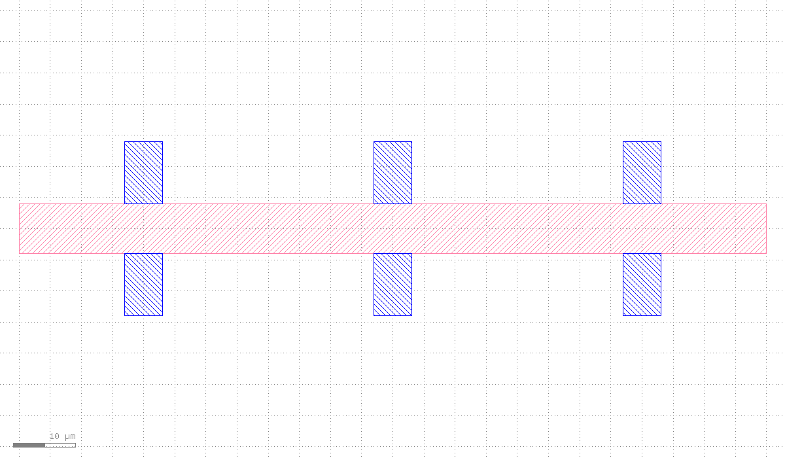
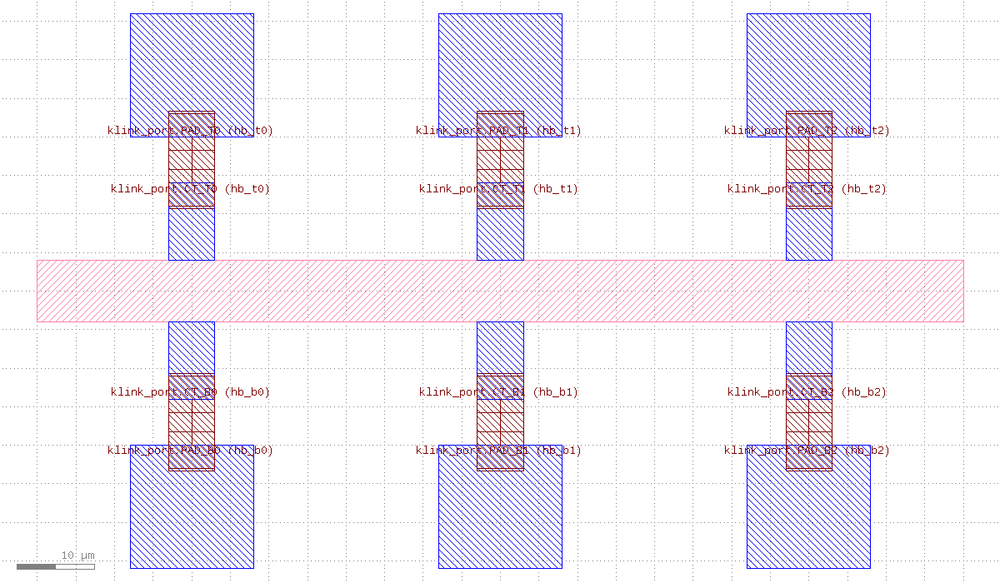
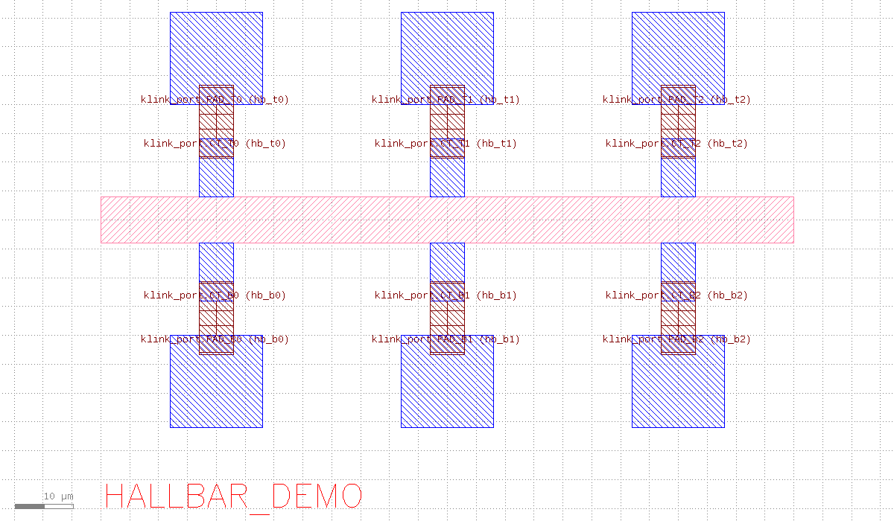

对话实战 · nanodevice
对话实战：一句话画出一个 Hall bar 器件
三句自然语言请求，三轮真实调用，一个从空 cell 画到成品的 Hall bar 器件。
这是一段真实对话记录。下面每一句用户请求都是真实用户会说的话；针对每一句，klink 的 AI agent 真的调用了列出的 klink 工具，在实时运行的 KLayout 里画出版图——每一步后的截图就是 KLayout 当时的真实画面，没有预先写好的坐标脚本。
用户
帮我画一个 Hall bar 器件：中间一条水平的长条主体，上下两边各伸出 3 个测量接触条。
klink agent
开了一个一次性 tab，建好 4 个层（器件层 1/0、金属层 10/0、标签层 6/0、路由层 12/0），先画中间的 mesa 主体（120 × 8 µm），再一次性批量画出上下各 3 条接触（共 6 条），接触条从 mesa 边缘向外伸出。
view.new_tab(cell_name="HALLBAR_CHAT_DEMO")
layer.ensure(1/0, 10/0, 6/0, 12/0)
shape.insert_boxes(mesa → 1/0, 1 box)
shape.insert_boxes(6 contacts → 10/0)
view.zoom_fit
layer.ensure(1/0, 10/0, 6/0, 12/0)
shape.insert_boxes(mesa → 1/0, 1 box)
shape.insert_boxes(6 contacts → 10/0)
view.zoom_fit

用户
在每个接触条外面放一个大的探针 pad，再用走线把接触引到对应的 pad。
klink agent
批量画了 6 个 16×16 µm 的探针 pad，摆在每条接触条外侧。然后没有直接手画连线——而是先在接触条尖端和 pad 内边分别标一个 Port（每对接触/pad 共用一个 net 名，比如 hb_t0），再调用 klink 的 tapered-hybrid 路由后端，让它读 Port 规划走线并写回 12/0 层。路由结果 ok=true，6 条走线全部成功、0 次避障碰撞、0 次相互重叠。
shape.insert_boxes(6 pads → 10/0)
port.mark_many(12 ports on 999/99, 6 nets: hb_t0..hb_t2, hb_b0..hb_b2)
routing.tapered_hybrid_cell(cell="HALLBAR_CHAT_DEMO", port_layer="999/99", obstacle_layers=[])
→ {"ok": true, "route_count": 6, "obstacle_hit_count": 0, "sibling_overlap_count": 0}
view.zoom_fit
port.mark_many(12 ports on 999/99, 6 nets: hb_t0..hb_t2, hb_b0..hb_b2)
routing.tapered_hybrid_cell(cell="HALLBAR_CHAT_DEMO", port_layer="999/99", obstacle_layers=[])
→ {"ok": true, "route_count": 6, "obstacle_hit_count": 0, "sibling_overlap_count": 0}
view.zoom_fit

routing.tapered_hybrid_cell 的结构化结果 ok=true）。留在图上的红色小方框是 Port 标记本身，不是走线。用户
给器件标上名字，缩放到整体给我看最终效果。
klink agent
在器件下方写入标签文字，然后缩放到整体视野。
shape.insert_text(string="HALLBAR_DEMO" → 6/0)
view.zoom_fit
view.zoom_fit

这段对话画了什么
三句话、三轮真实调用：先批量画出 mesa + 接触的合成几何，再用 Port 标记意图、交给 routing.tapered_hybrid_cell 规划并写回真实走线（结构化结果 ok=true，而不是"看起来连上了"），最后标名收尾。全程只用了一个一次性 tab，没有碰用户原来打开的其它 KLayout 窗口。
想看这个器件更完整、更细的分步版本（含层规划表格、Anchor waypoint、局部放大细节）？看 Hall bar 图文教程。
诚实复述：以上三轮截图都是本次会话里针对同一个一次性 KLayout tab 实跑产生的，几何坐标是本次现场决定的合成数值（非任何真实工艺），调用的 RPC 名称与上面
.chat-calls 列出的完全一致。